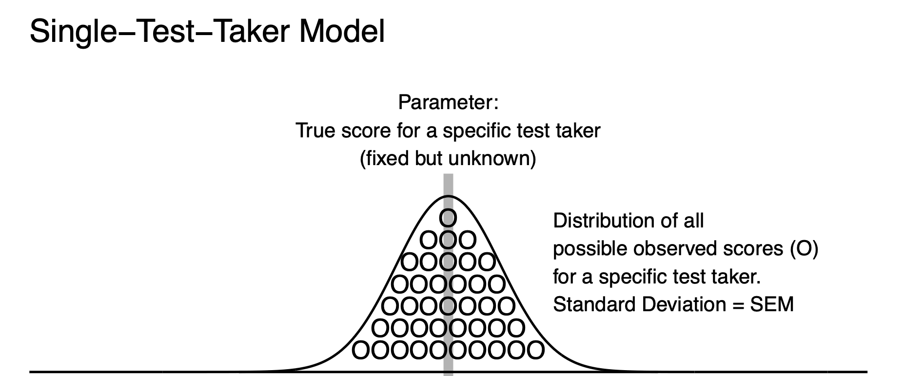

6 SEM-Single-Test-Takers Interval
In the above section, we reviewed a conceptual interpretation of the SEM interval. We demonstrated that for a specified true score it was possible to create range of observed scores that might occur for a variety of test takers. However, because true scores are unknown the above Standard Error of Measurement interval for a regression model does not help a test taker interpret their specific test score. In this section, we focus on using a test takers observed score to create an interval that will capture their true score - a practical application of the Standard Error of Measurement error term.
Recall the Cross Section graph for the Standard Error of Measurement, above. This graph illustrates that the standard deviation of residuals, for those test takers with true score of 90, was the same as the standard deviation of residuals based on all test takers. In both cases, the standard deviation of observed scores from the model was the Standard Error of Measurement. The natural extension of this is that when one person has a true score of 90 that their observed scores will also have a standard deviation that corresponds to the Standard Error of Measurement. Moreover, the observed scores will have a standard deviation that corresponds to the Standard Error of Measurement regardless of the test taker’s true score. As a result, we can easily create a model of observed scores for a single person. For a single person, we imagine their true score as the mean of a population of observed scores. This interpretation corresponds to the definition of a true score in classical test theory. We also imagine a set of observed scores that have a standard deviation that corresponds to the Standard Error of Measurement (i.e., a value of 5).
If Bob has an observed score of 90, we can create
set.seed(1)
bob_true_score = 90
error <- as.numeric(scale(rnorm(n = 1000000)))*5
all_bob_observed_scores <- bob_true_score + errorWe can create a histogram of Bob’s observed scores that matches the theoretical graph above:
bob_df <- data.frame(all_bob_observed_scores)
ggplot(data = bob_df,
mapping = aes(x = all_bob_observed_scores)) +
geom_histogram(bins = 30) +
xlab("Distribution of Observed Scores for Bob") +
ylab("Frequency") +
scale_x_continuous(breaks = seq(60, 110, by = 10)) +
ggtitle("Bob's Observed Scores") +
theme_classic() +
annotate(geom = "segment",
y = 0, yend = 150000,
x = 90, xend = 90,
color = "red", linewidth = 1)6.1 Information from Other Test Takers
Typically, when we create an interval for a single person it is based on information from other test takers. Specifically, we use the reliability of observed scores and the standard deviation of observed score. Both of these are calculated based on data from other test takers.
We we created Bob’s distribution of observed scores we did so using the same error process as we did for the 1,000,000 test takers. Consequently, we use the information from the other test takers discussed previously to calculate Bob’s Standard Error of Measurement interval. Specifically, we use the reliability and standard deviation of observed scores from these other test takers:
# All test takers
print( sd(observed) )[1] 11.18034# All test takers
rxx = var(true) / var(observed)
print( rxx )[1] 0.8We can use this information to calculate the Standard Error of Measurement that we will use for Bob’s interval.
sem = sd(observed) * sqrt(1 - rxx)6.2 Bob’s Interval
Now an interval for Bob is:
\[ observed \pm 1.96(SEM) \]
We can get a specific observed score from Bob:
bob_first_observed_score = all_bob_observed_scores[1]
print(bob_first_observed_score)[1] 86.86808Then, we create an interval centered on that observed score.
LL = bob_first_observed_score - 1.96*sem
print(LL)[1] 77.06808UL = bob_first_observed_score + 1.96*sem
print(UL)[1] 96.66808The resulting 95% SEM [77.07, 96.67] is an interval estimate of Bob’s true score. On average, 95% of the interval estimates will contain a person’s true score. Some people prefer to phrase this as, “With repeated measurement, on average, 19 of 20 (i.e., 95%) of interval estimates will contain the true score.” Consequently, this specific interval, 95% SEM [77.07, 96.67], may or may not contain Bob’s true score. A simulation that demonstrates this interpretation of the SEM confidence interval (based on an observed score) is provide in the Myth #1 section, below.